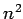
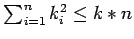
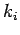
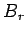
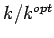

Nächste Seite: Explizite Raumpartitionierung Aufwärts: Diplomarbeit Vorherige Seite: Notation: Inhalt

hätte (jedes Partikel kommt für jedes andere Partikel als Kollisionspartner in Frage), ist es notwendig, sich hierüber Gedanken zu machen. Um ein plausibles Ergebnis der Flüssigkeitsbewegung zu erhalten, genügt es, wie in 2.2 beschrieben, die Physik in jedem Punkt der LAGRANGE'schen Simulation (Partikel) nur auf einem kompakten Träger zu berechnen. Der Radius dieses Trägers bestimmt maßgeblich die Komplexität der Simulation. Da die Partikel keinen Einfluß auf das gesamte Gebiet haben, sondern nur auf ihre unmittelbare Umgebung, empfiehlt sich nun eine Raumpartitionierung. Es wird nur der Abstand zu den Partikeln ermittelt, deren Raumpartition sich mit dem Träger der physikalischen Größen des betrachteten Partikels schneidet. Dadurch wird der Aufwand von auf
reduziert, wobei
die Anzahl der Partikel in der Partition des
jedes Partikels als Raumpartition, so erhält man das von der Physik abhängige optimale
an, wie viele Abstände zu viel gemessen werden, was insbesondere dann eine große Rolle spielt, wenn die Physik bei einer Kollision sehr billig zu berechnen, die Ermittlung des Abstandes jedoch schon vergleichbar teuer ist.